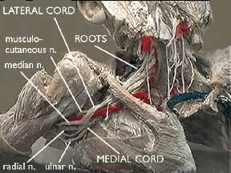
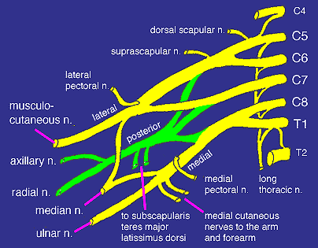

|
 Dissection of the brachial plexus, University of Washington Department of Biological Structure |
Brachial Plexus Anatomy
Roots
The anterior rami of the spinal nerves of C5, 6, 7, 8, and T1 form the roots of the brachial plexus. The roots emerge from the transverse processes of the cervical vertebrae immediately posterior to the vertebral artery, which travels in a cephalocaudad direction through the transverse foramina. Each transverse process consists of a posterior and anterior tubercle, which meet laterally to form a costotransverse bar. The transverse foramen lies medial to the costotransverse bar and between the posterior and anterior tubercles. The spinal nerves which form the brachial plexus run in an inferior and anterior direction within the sulci formed by these structures.
The dorsal scapular nerve arises from the C5 root and passes through the middle scalene muscle to supply the rhomboideus and levator scapulae muscles. The long thoracic nerve to the serratus anterior arises from the C5, 6, and 7 roots and also pierces the middle scalene as it passes posterior to the plexus.
Trunks and Divisions
The trunks of the brachial plexus pass between the anterior and middle scalene muscles. The superior trunk lies closest to the surface and is formed by the C5 and C6 roots. The suprascapular nerve and the nerve to the subclavius arise from the superior trunk. The suprascapular nerve contributes sensory fibers to the shoulder joint and provides motor innervation to the supraspinatus and infraspinatus muscles. The C7 root continues as the middle trunk and the C8 and T1 roots join to form the inferior trunk. The trunks divide into anterior and posterior divisions, which separate the innervation of the ventral and dorsal halves of the upper limb.
The phrenic nerve (C3, 4, 5) passes between the anterior and middle scalenes and continues over the surface of the anterior scalene muscle, thus a diaphragmatic twitch during interscalene brachial plexus performed with a nerve stimulator may indicate placement of the needle anterior to the plexus.
The spinal accessory nerve (CN XI) runs posterior to the brachial plexus over the surface of the middle and posterior scalenes. Contact with the spinal accessory nerve with a nerve stimulator (stimulating twitch in the trapezius) indicates placement of the needle posterior to the plexus.
Cords and Branches
The cords are named the lateral, posterior, and medial cord, according to their relationship to the axillary artery. The cords pass over the first rib close to the dome of the lung and continue under the clavicle immediately posterior to the subclavian artery. The lateral cord receives fibers from the anterior divisions of the superior and middle trunk, and is the origin of the lateral pectoral nerve (C5, 6, 7). The posterior divisions of the superior, middle, and inferior trunk combine to form the posterior cord. The upper and lower subscapular nerves (C7, 8 and C5, 6) leave the posterior cord and descend behind the axillary artery to supply the subscapularis and teres major muscles, respectively. The thorcodorsal nerve to the latissimus dorsi, also known as the middle subscapular nerve (C6, 7, 8) also arises from the posterior cord. The inferior trunk continues as the medial cord and gives off the median pectoral nerve (C8, T1), the medial brachial cutaneous nerve (T1) and the medial antebrachial cutaneous nerve (C8, T1). The lateral cord divides into the lateral root of the median nerve and the musculocutaneous nerve. The musculocutaneous nerve leaves the brachial plexus sheath high in the axilla at the level of the lower border of the teres major muscle and passes into the substance of the coracobrachialis muscle. The posterior cord gives off the axillary nerve at the lower border of the subscapularis muscle and continues along the inferior and posterior surface of the axillary artery as the radial nerve. The axillary nerve supplies the shoulder joint, the surgical neck of the humerus, the deltoid, and the teres minor muscles before ending as the superior lateral brachial cutaneous nerve. The radial nerve continues along the posterior and inferior surface of the axillary artery. The medial cord contributes the medial root of the median nerve and continues as the ulnar nerve along the medial and anterior surface of the axillary artery. The medial and lateral roots join to form the the median nerve which continues along the posterior and lateral surface of the axillary artery.

The Brachial Plexus "Sheath"
The connective tissue of the prevertebral fascia and the anterior and middle scalenes envelops the brachial plexus as well as the subclavian and axillary artery in a neurovascular "sheath". The tissue is densely organized as it leaves the deep cervical fascia proximally, but becomes more loosely arranged distally. The sheath blends with the fascia of the biceps and brachialis muscles distally.
Anatomic dissection, histologic examination, and CT scanning after injection of radiocontrast into the brachial plexus sheath demonstrate the existence of connective tisue septae which extend inward from the fascia surrounding the sheath.1 These thin velamentous connective tissue septae frequently adhere to nerves and vessels leaving no free space between layers and compartmentalizing the components of the sheath.2 Injection into the sheath in cadavers results in the filling of multiple discrete interconnecting "grape-like" bubbles.2
Some controversy exists as to what degree the septae limit the spread of local anesthetics within the sheath. Some investigators propose that the septae significantly limit the spread of solutions when a single injection technique is used to perform brachial plexus block, and suggest that the term "sheath" has been misapplied to the connective tissues surrounding the brachial plexus.1 This may explain why anesthesia occasionally is complete and rapid in onset in some nerves, but delayed and incomplete or completely absent in others. Other investigators have demonstrated the existence of communications between the compartments within the sheath. Methylene blue and latex solutions injected in cadavers stains and surrounds the medial, radial, and ulnar branches despite the presence of septae.2 The presence of communications may explain why single injection techniques have success rates comparable to multiple injection techniques. Complete spread of anesthesia through a single injection technique possibly occurs through many routes, such as spread of local anesthetics through channels between compartments, spread through communications at proximal levels in the sheath, and diffusion through the thin septae between compartments.
Anatomy References
1. Thompson GE and Rorie DK. Functional anatomy of the brachial plexus sheaths. Anesthesiology 1983;59:117-22.
2 . Partridge BL et al. Functional anatomy of the brachial plexus sheath: implications for anesthesia. Anesthesiology 1987; 66:743-47.
HOME